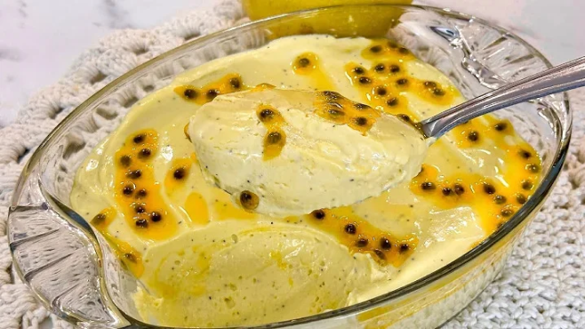

Ingredientes:
- 1 lata de leite condensado (395 g)
- 1 lata de creme de leite (300 g)
- 1/2 xícara de suco de maracujá natural (aproximadamente 2 maracujás grandes)
- 1 pacote de gelatina em pó sem sabor (12 g)
- 1/4 de xícara de água quente (para hidratar a gelatina)
- Polpa de 1 maracujá (opcional, para decorar)

Modo de Preparo:
- Hidrate a gelatina: em uma tigela pequena, coloque a gelatina em pó e adicione a água quente. Misture bem até que a gelatina esteja completamente dissolvida e reserve.
- Bata os ingredientes: no liquidificador, coloque o leite condensado, o creme de leite e o suco de maracujá. Bata por cerca de 2 minutos, até obter uma mistura homogênea.
- Incorpore a gelatina: com o liquidificador ainda ligado, adicione a gelatina dissolvida e bata por mais 30 segundos.
- Monte a mousse: despeje a mistura em taças individuais ou em um recipiente grande.
- Leve à geladeira: deixe na geladeira por pelo menos 4 horas ou até que a mousse esteja firme.
- Decoração: antes de servir, adicione a polpa do maracujá por cima para decorar.
- Sirva: a mousse de maracujá está pronta para ser saboreada!